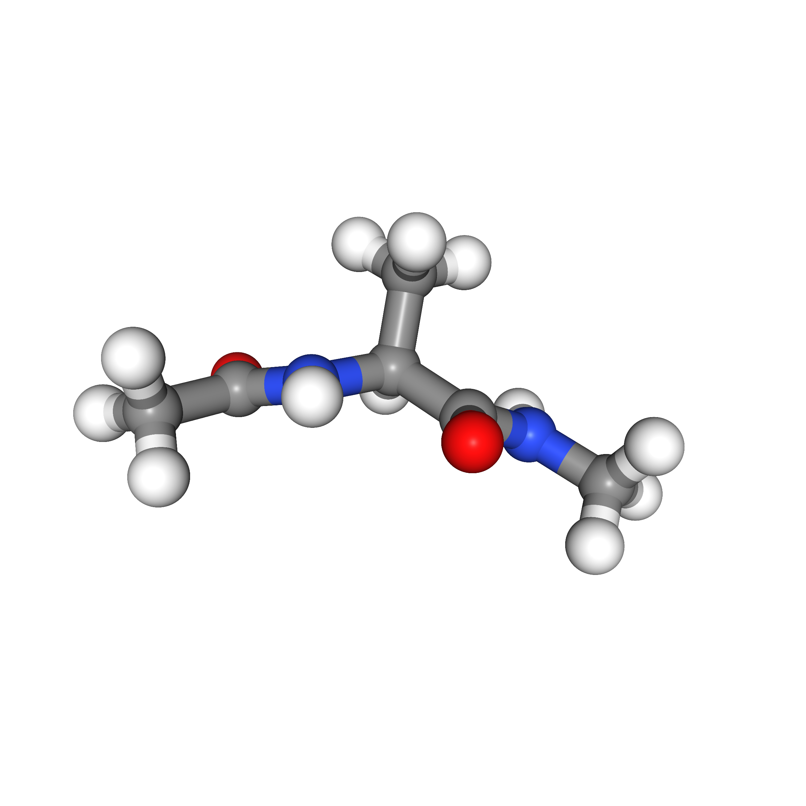
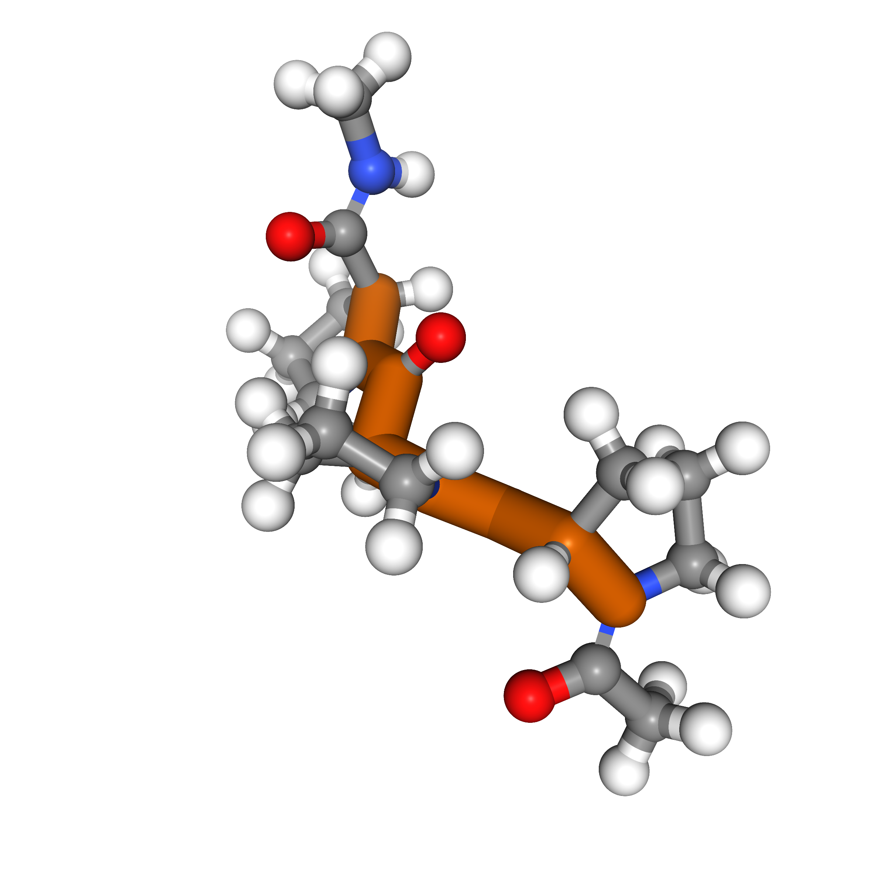
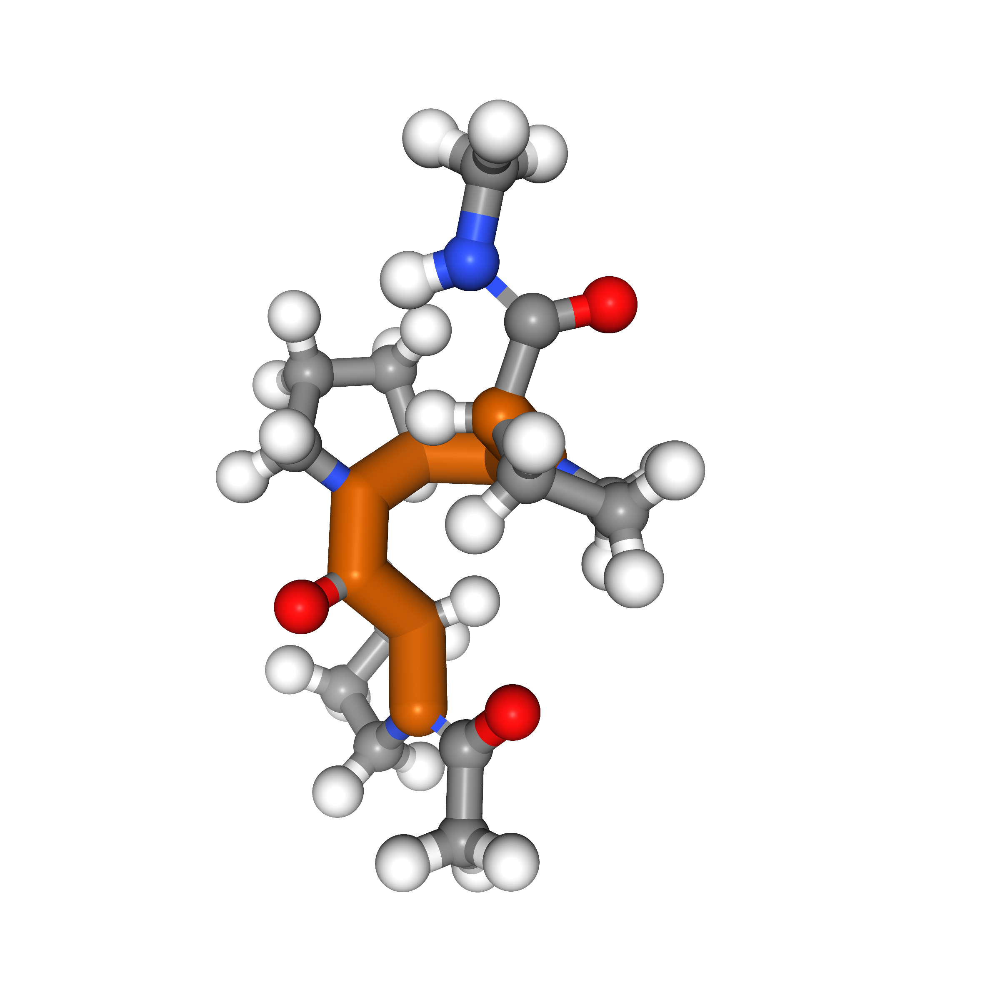
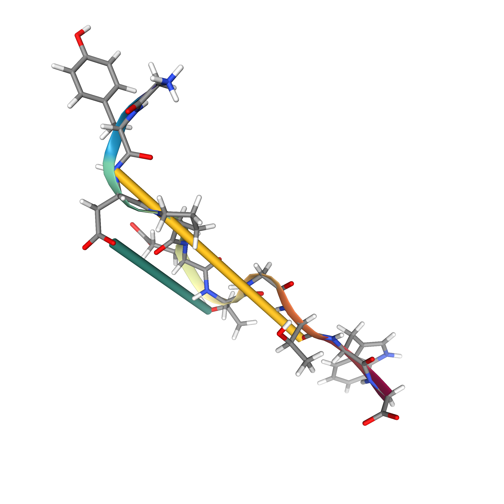
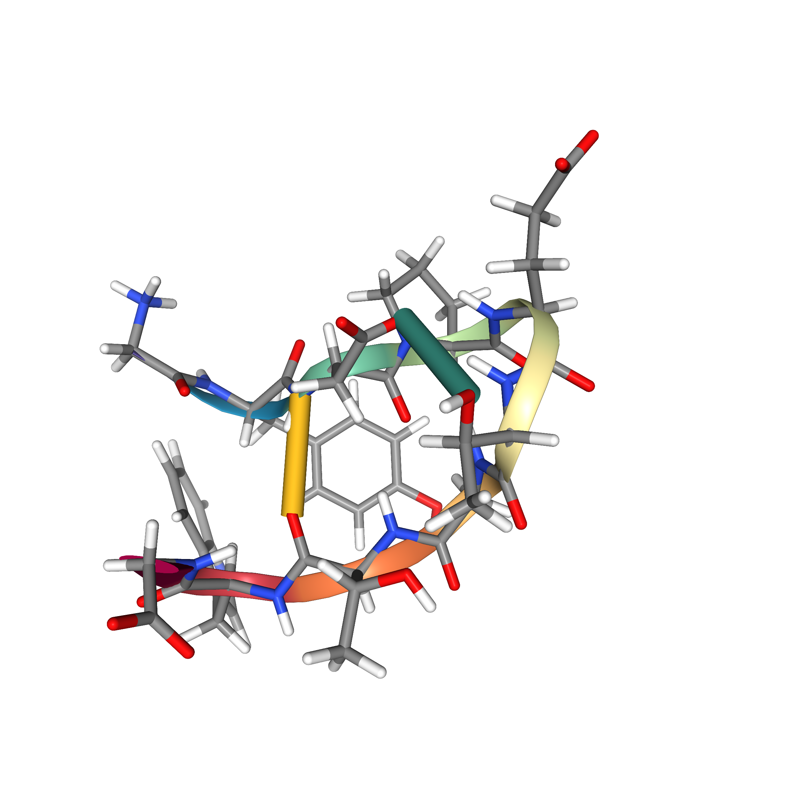

Double-well
system

Unbiased MD

TPS-DPS
Understanding transition pathways between metastable states in molecular systems is crucial to advance material design and drug discovery. However, unbiased molecular dynamics simulations are computationally infeasible due to the high energy barriers separating these states. Although recent machine learning techniques offer potential solutions, they are often limited to simple systems or rely on collective variables (CVs) derived from costly domain expertise. In this paper, we introduce a novel approach that trains diffusion path samplers (DPS) to sample transition pathways without the need for CVs. We recast the problem as an amortized sampling of the target path measure, minimizing the log-variance divergence between the path measure induced by DPS and the target path measure. To ensure scalability to high-dimensional tasks, we introduce a new off-policy training objective based on learned control variates and replay buffers, and a scale-based parameterization of the bias forces. Our approach, termed TPS-DPS, is evaluated on a synthetic double-well potential and three proteins: Alanine Dipeptide, Polyproline Helix, and Chignolin. Results show that our approach produces more realistic and diverse transition pathways compared to existing CV-free methods.
Unbiased MD
TPS-DPS
Initial state (C5)
Sampled transition (conformation change)
Target state (C7ax)

Initial state (left-handed, PP-II)
Sampled transition (isomerization)

Target state (right-handed, PP-I)
Initial state (unfolded)
Sampled transition (folding)

Target state (folded)
Unbiased MD

SMD (0.5)

SMD (1)

TPS-DPS (F)

TPS-DPS (P)

Ground Truth

Unbiased MD

SMD (10)

SMD (20)

PIPS (F)

TPS-DPS (F)

TPS-DPS (P)

Unbiased MD

SMD (10K)

SMD (20K)

PIPS (P)

TPS-DPS (P)

TPS-DPS (S)